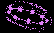

状態変化関連まとめ
2020/02/19に頭上に表示されるバフ/デバフアイコンが変更されました。これを機に現在実装されているバフ/デバフについてまとめます。
状態異常分類
バフ/デバフアイコン比較
備考
状態異常分類
| 種類 | 抵抗時の効果 |
|---|---|
| 異常系 | 状態異常持続時間の減少、最小0.5 秒 |
| 呪い系 | 状態異常持続時間の減少、最小0.5 秒 |
| 低下系 | 状態異常効果の減少、最小でも5％効果あり。最小0.5秒 |
異常系
| 種類 | 付加効果の名前 | 内容 | アイコン | 旧アイコン |
|---|---|---|---|---|
| 暗闇 | 暗闇 | 視野の減少 | ||
| コールド | コールド |
移動速度の低下(低下系移動速度減少と重複可能)、 全体速度が1/2になります。 フリーズにかかる確率増加 |
||
| 移動不可 | 移動不可 | 移動不可 | ||
| 混乱 | 混乱 |
モンスターが自分自身を攻撃する。 プレイヤーの場合、自分自身を初期スキルで攻撃する。 （旧仕様）難易度１のスキルのみ使用可能。 |
||
| 挑発 | 挑発 | 使用者を優先的に攻撃するようになる。 | ||
| 足かせ | 束縛生成、無敵足かせ生成 | 移動不可、一定襲撃時解除 | ||
| 沈黙 | スキル制限 | スキル使用不可 | ||
| 増幅 | 呪い増幅 |
呪い系の効果の増加 ほとんどの状態異常に適用されたのを呪いを増幅するように変更 |
||
| 復活妨害 | 復活妨害 | 復活不可 | ||
| 武器を解除 | 武器を解除 | 攻撃不可 | ||
| アンデッド化 | アンデッド化 | 対象の種類をアンデッドに変更 | ||
| 悪夢 | - | 25％の確率で即死(トラップ専用) | ||
| 感電 | 感電 | 被害が発生した場合、風ダメージ | ||
| 出血 | 出血、該当スキルクリティカル発動時の出血 | 物理持続ダメージ、防御力無視 | ||
| 中毒 | 中毒、ガス中毒 | 大地持続ダメージ | ||
| フリーズ | フリーズ | 行動不可 | ||
| 石化 | 石化 | 行動不可、受けるダメージ減少 | ||
| 硬直 | 麻痺、スタン、硬直 | 行動不可 |

|
|
| 睡眠 | 睡眠 | 行動不可、ダメージを受けると目覚める | ||
| 誘惑 | 誘惑 | モンスターが味方になる。 | ||
| 敵逃亡 | 逃げ | モンスターが逃げていく。 | ||
| 踊り | 踊り | モンスターがダンスを踊る。 |
呪い系
| 種類 | 付加効果の名前 | 内容 | アイコン | 旧アイコン |
|---|---|---|---|---|
| 拷問 | 拷問 | 攻撃時に闇ダメージ | ||
| 衝動 | 衝動 | 一定時間内に攻撃していなければ、闇ダメージ | ||
| 献血 | 献血 | 被害をもたらす周辺敵回復させる | ||
| 針のむしろ | 針のむしろ | 攻撃失敗時闇ダメージ | ||
| 花瓶 | 花瓶 | ターゲットがしばらくの間、無敵になって終わってダメージを受ける | ||
| 蟻地獄 | 蟻地獄状態 | 回復すれば闇ダメージ | ||
| 陰謀の影 | 陰謀の影 | 効果の削除時に持続時間だけ闇ダメージ | ||
| 契約 | 契約 | 対象は回復させ周辺には闇ダメージ | ||
| 裏切りの盟約 | 裏切りの盟約 |
モンスターは、最終防御力減少 ユーザは武器・腰を除くアイテムの効果が消える |
||
| 魂の盟約 | 魂の盟約 | 契約の状態で死亡時、悪魔のCP 回復 | ||
| 血の盟約 | 血の盟約 | 契約の状態で死亡時、悪魔のHP 回復 | ||
| ソウルブレイズ | ソウルブレイズ | 炎持続ダメージ | ||
| ダーク回 | ダーク回 | 闇持続ダメージ | ||
| 武器破壊 | 武器破壊 | 攻撃力減少、PVP を使用不可 | ||
| 鎧破壊 | 鎧破壊 | 防御力の減少、PVP を使用不可 | ||
| 変身 | カエルに変身、ウサギ変身、広域ウサギ変身、広域カエルに変身 | 行動不可(スキルに応じて追加の効果) | ||
| ターゲット設定 | - |
モンスターが先攻モンスターであるか、その他の理由で周辺に 攻撃対象を決めるとき、優先的にかかる効果 |
||
| レベルの低下 | レベルダウン | レベルの減少 |
低下系
| 種類 | 付加効果の名前 | 内容 | アイコン | 旧アイコン |
|---|---|---|---|---|
| 攻撃力の低下 | 攻撃力の低下％ | 攻撃力、魔法攻撃力減少 | ||
| 防御力の低下 | 防御力の減少、防御力減少％、ダメージ時防御力の低下、鎧防御力減少 | 防御力減少 | ||
| 命中率の低下 | 命中率の低下 | 命中率の減少 | ||
| 回避率の低下 | 回避率の低下、ダメージ時回避率低下 | 回避率減少 | ||
| 攻撃速度の低下 | 攻撃速度の低下 | 攻撃速度減少 | ||
| 移動速度の低下 | 移動速度の低下 | 移動速度減少 | ||
| 集中力の低下 | 集中力の低下 | 集中力の減少 | ||
| 属性抵抗低下 | 火抵抗の減少、ターゲット火抵抗弱体化、水の抵抗の減少、大地抵抗の減少、光抵抗の減少、ダメージ時の光抵抗弱体化、暗闇の抵抗の減少、魔法抵抗力減少 | 属性抵抗低減 | ||
| 能力値の低下 | 能力値の低下 | 能力値の減少 | ||
| ブロック率の低下 | ブロック率の減少、最終的なブロック率の低下 | ブロック率発動確率の減少 | ||
| 状態異常抵抗の低下 | ダメージ時抵抗率の低下、すべての抵抗力パーセント低下、誘惑抵抗力の低下、異常系抵抗の減少、低下系抵抗低減 | 抵抗値の減少 | ||
| 回復率の低下 | 回復率の低下 | 回復量減少 |
行動不可系、行動制御系
- 上記のご案内いただいた状態異常効果とは別に硬直、フリーズなどの強力な状態異常効果は行動不可系と行動制御系に分類されます。
行動不可
- 行動不可状態での累積合計時間が超過すると、行動不可系列に対して一定時間、免疫状態になります。| 種類 | 付加効果の名前 | 内容 | アイコン | 旧アイコン |
|---|---|---|---|---|
| フリーズ | フリーズ | 行動不可 | ||
| 石化 | 石化 | 行動不可、受けるダメージ減少 | ||
| 硬直 | 麻痺、スタン、硬直 | 行動不可 | ||
| 変身 | カエルに変身、マジックボックスなど | 行動不可(スキルに応じて追加の効果) |
行動制御
- 行動制御状態での累積合計時間が超過すると、行動不可系列に対して一定時間、免疫状態になります。| 種類 | 付加効果の名前 | 内容 | アイコン | 旧アイコン |
|---|---|---|---|---|
| 睡眠 | 睡眠 | 行動不可、ダメージを受けると目覚める | ||
| 敵逃亡 | 敵逃亡 | モンスターが逃げていく。攻撃時解除 | ||
| 移動不可 | 移動不可 | 移動不可 | ||
| 足かせ | 束縛生成、無敵足かせ生成 | 移動不可、攻撃時解除 | ||
| 踊り | 踊り |
モンスターがその場で回転する。 攻撃されると解除。 |
強化・弱化アイコン比較
強化マークと弱化マークでの比較。バフ効果はの付与状況PTメンバーにも共有されます。(右下より確認可能)
| 種類 | バフ | デバフ | 関連スキル |
|---|---|---|---|
| 攻撃力 | - | ||
| 防御力 | - | ||
| 命中率 | - | ||
| 回避率 | - | ||
| 攻撃速度 | - | ||
| 魔法攻撃力 | - | ||
| 魔法抵抗力 | - | ||
|
最大体力増加 能力向上系 |
|
- | |
| 移動速度 | - | ||
| 混乱 | 混乱の青アイコンは免疫状態。 | ||
| 移動不可 | 移動不可の青アイコンは免疫状態。 | ||
| クリティカル率 | ？ | - | |
| 魔法致命打率 | ？ | - | |
| ミラーカーズ系 | ？ | - | |
| 吸血 | ？ | - | |
| ステ反転 | ？ | - | |
| アンデット化 | ？ | - | |
| 防具破壊 | ？ | - | |
| 武器破壊 | ？ | - | |
| 武器使用不可 | ？ | 腕斬り | |
| 決定打率上昇 | ？ |
旧バージョンのアイコンも分かる範囲で比較。
| 種類 | バフ | デバフ | 関連スキル |
|---|---|---|---|
| 攻撃力 | - | ||
| 防御力 | - | ||
| 命中率 | - | ||
| 回避率 | - | ||
| 攻撃速度 | - | ||
| 魔法抵抗力 | - | ||
| 移動速度 | - | ||
| 混乱 |  | - | |
| 移動不可 | 無し | - | |
| クリティカル率 | ？ | ？ | クルーエルソウル |
| 魔法致命打率 | ？ | ？ | 光奏師覚醒支援スキル |
| ミラーカーズ系 | - | - | |
| 吸血 | - | - | |
| ステ反転 | ？ | - | |
| 防具破壊 | ？ | - | |
| 武器破壊 | ？ | - | |
| 武器使用不可 | ？ | ？ | 腕斬り |
補足
旧バージョン(2020/2/18以前)のロジックは以下。
状態異常の抵抗
• それぞれの状態異常は対応する抵抗により、発動確率と持続時間が軽減されます。 • 低下系効果は低下量も軽減することも可能。状態異常抵抗値の算出式
抵抗値(%)=基礎抵抗値(%)*ステータス補正 ・ 基礎抵抗値は装備に付加されている抵抗、称号:密教による抵抗、スキル補正の合計値 ■ スキル補正はもっとも効果の高いスキルにより上書きされます。 ■ 抵抗上昇系スキルと抵抗低下系スキルでは効果を問わず最後に掛かったスキルにより上書きされます。 例1) プロテクティングエビルを使用後、死の香り slv1が使用された場合 ⇒エビルの補正を問わず死の香りによる低下抵抗低下:-5%が適用 例2) 死の香り slv71 を使用後、プロテクティングエビル slv1が発動した場合 ⇒死の香りの補正を問わずエビルによる低下抵抗上昇が適用 ・ステータス補正 ■ 異常系 1+(知恵+カリスマ)/500 ■ 低下系、呪い系 1+(知恵+カリスマ)/1000 ※2020/2/19現在、この計算式が有効でない可能性あり。